降维
Contents
降维¶
import matplotlib.pyplot as plt
import numpy as np
import pandas as pd
投影¶
np.random.seed(4)
m = 60
w1, w2 = 0.1, 0.3
noise = 0.1
angles = np.random.rand(m) * 3 * np.pi / 2 - 0.5
X = np.empty((m, 3))
X[:, 0] = np.cos(angles) + np.sin(angles) / 2 + noise * np.random.randn(m) / 2
X[:, 1] = np.sin(angles) * 0.7 + noise * np.random.randn(m) / 2
X[:, 2] = X[:, 0] * w1 + X[:, 1] * w2 + noise * np.random.randn(m)
fig = plt.figure(figsize=(12, 6))
ax = fig.add_subplot(111, projection='3d')
ax.plot(X[:, 0], X[:, 1], X[:, 2], 'o')
lims = [-1.8, 1.8, -1.3, 1.3, -1.0, 1.0]
ax.set(xlabel="$x_1$",
ylabel="$x_2$",
zlabel="$x_3$",
xlim=lims[0:2],
ylim=lims[2:4],
zlim=lims[4:6])
[Text(0.5, 0, '$x_1$'),
Text(0.5, 0.5, '$x_2$'),
Text(0.5, 0, '$x_3$'),
(-1.8, 1.8),
(-1.3, 1.3),
(-1.0, 1.0)]
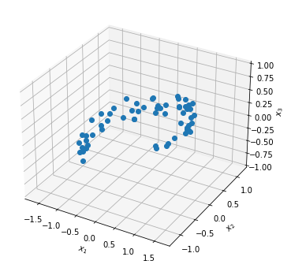
PCA¶
from sklearn.decomposition import PCA
pca = PCA(n_components=2)
X2D = pca.fit_transform(X)
X2D[:5]
array([[ 1.26203346, 0.42067648],
[-0.08001485, -0.35272239],
[ 1.17545763, 0.36085729],
[ 0.89305601, -0.30862856],
[ 0.73016287, -0.25404049]])
X3D_inv = pca.inverse_transform(X2D)
np.mean(np.sum(np.square(X3D_inv - X), axis=1))
0.010170337792848549
pca.components_
array([[-0.93636116, -0.29854881, -0.18465208],
[ 0.34027485, -0.90119108, -0.2684542 ]])
可解释方差¶
pca.explained_variance_ratio_
array([0.84248607, 0.14631839])
1 - pca.explained_variance_ratio_.sum()
0.011195535570688975
def make_mesh(lims, h):
x = np.linspace(lims[0], lims[1], h)
y = np.linspace(lims[2], lims[3], h)
xx, yy = np.meshgrid(x, y)
return xx, yy
lims = [-1.8, 1.8, -1.3, 1.3, -1.0, 1.0]
x1, x2 = make_mesh(lims, h=10)
C = pca.components_
R = C.T.dot(C)
z = (R[0, 2] * x1 + R[1, 2] * x2) / (1 - R[2, 2])
三维平面¶
from mpl_toolkits.mplot3d import Axes3D
fig = plt.figure(figsize=(12, 6))
ax = fig.add_subplot(111, projection='3d')
X3D_above = X[X[:, 2] > X3D_inv[:, 2]]
X3D_below = X[X[:, 2] <= X3D_inv[:, 2]]
ax.plot(X3D_below[:, 0], X3D_below[:, 1], X3D_below[:, 2], "bo", alpha=0.5)
ax.plot_surface(x1, x2, z, alpha=0.2, color="k")
np.linalg.norm(C, axis=0)
ax.plot([0], [0], [0], "k.")
for i in range(m):
if X[i, 2] > X3D_inv[i, 2]:
ax.plot([X[i][0], X3D_inv[i][0]], [X[i][1], X3D_inv[i][1]],
[X[i][2], X3D_inv[i][2]], "k-")
else:
ax.plot([X[i][0], X3D_inv[i][0]], [X[i][1], X3D_inv[i][1]],
[X[i][2], X3D_inv[i][2]], "k-")
ax.plot(X3D_inv[:, 0], X3D_inv[:, 1], X3D_inv[:, 2], "k+")
ax.plot(X3D_inv[:, 0], X3D_inv[:, 1], X3D_inv[:, 2], "k.")
ax.plot(X3D_above[:, 0], X3D_above[:, 1], X3D_above[:, 2], "bo")
ax.set(xlabel="$x_1$",
ylabel="$x_2$",
zlabel="$x_3$",
xlim=lims[0:2],
ylim=lims[2:4],
zlim=lims[4:6])
[Text(0.5, 0, '$x_1$'),
Text(0.5, 0.5, '$x_2$'),
Text(0.5, 0, '$x_3$'),
(-1.8, 1.8),
(-1.3, 1.3),
(-1.0, 1.0)]
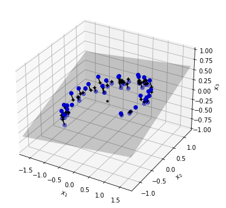
fig = plt.figure()
ax = fig.add_subplot(111, aspect='equal')
ax.plot(X2D[:, 0], X2D[:, 1], "k+")
ax.plot(X2D[:, 0], X2D[:, 1], "k.")
ax.plot([0], [0], "ko")
ax.arrow(0,
0,
0,
1,
head_width=0.05,
length_includes_head=True,
head_length=0.1,
fc='k',
ec='k')
ax.arrow(0,
0,
1,
0,
head_width=0.05,
length_includes_head=True,
head_length=0.1,
fc='k',
ec='k')
ax.set(xlabel="$z_1$", ylabel="$z_2$")
ax.axis([-1.5, 1.3, -1.2, 1.2])
ax.grid(True)
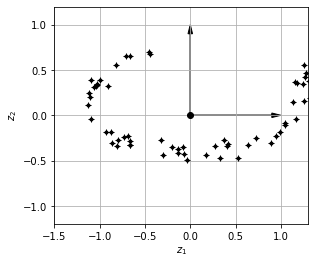
流形学习¶
from sklearn.datasets import make_swiss_roll
X, t = make_swiss_roll(n_samples=1000, noise=0.2, random_state=42)
lims = [-11.5, 14, -2, 23, -12, 15]
fig = plt.figure(figsize=(6, 5))
ax = fig.add_subplot(111, projection='3d')
ax.scatter(X[:, 0], X[:, 1], X[:, 2], c=t, cmap=plt.cm.hot)
ax.view_init(10, -70)
ax.set(xlabel="$x_1$",
ylabel="$x_2$",
zlabel="$x_3$",
xlim=lims[0:2],
ylim=lims[2:4],
zlim=lims[4:6])
plt.show()
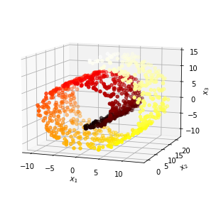
_, axes = plt.subplots(1, 2, figsize=(10, 4), constrained_layout=True)
axes[0].scatter(X[:, 0], X[:, 1], c=t, cmap=plt.cm.hot)
axes[0].axis(lims[:4])
axes[0].set(xlabel="$x_1$",ylabel="$x_2$")
axes[0].grid(1)
axes[1].scatter(t, X[:, 1], c=t, cmap=plt.cm.hot)
axes[1].axis([4, 15] + lims[2:4])
axes[1].set(xlabel="$z_1$")
axes[1].grid(1)
plt.show()
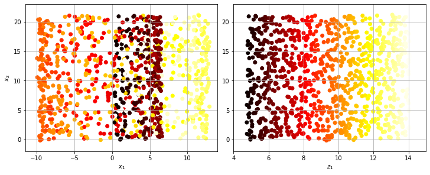
lims = [-11.5, 14, -2, 23, -12, 15]
x2, x3 = make_mesh(lims=lims[2:6], h=10)
from matplotlib import gridspec
fig = plt.figure(figsize=(12, 8))
pos_classes = [X[:, 0] > 5, 2 * (t[:] - 4) > X[:, 1]]
for ind, positive_class in enumerate(pos_classes):
ax = plt.subplot(121 + ind, projection='3d')
X_pos = X[positive_class]
X_neg = X[~positive_class]
ax.view_init(10, -70)
ax.plot(X_neg[:, 0], X_neg[:, 1], X_neg[:, 2], "y^")
ax.plot(X_pos[:, 0], X_pos[:, 1], X_pos[:, 2], "gs")
if ind == 0:
ax.plot_wireframe(5, x2, x3, alpha=0.5)
ax.set(xlabel="$x_1$",
ylabel="$x_2$",
zlabel="$x_3$",
xlim=lims[0:2],
ylim=lims[2:4],
zlim=lims[4:6])
fig = plt.figure(figsize=(12, 4))
for ind, positive_class in enumerate(pos_classes):
ax = plt.subplot(121 + ind)
ax.plot(t[positive_class], X[positive_class, 1], "gs")
ax.plot(t[~positive_class], X[~positive_class, 1], "y^")
ax.set(xlabel="$z_1$", ylabel="$z_2$")
ax.axis([4, 15] + lims[2:4])
ax.grid(1)
if ind == 1:
ax.plot([4, 15], [0, 22], "b-", lw=2)
plt.show()
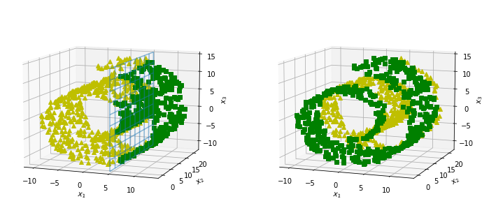
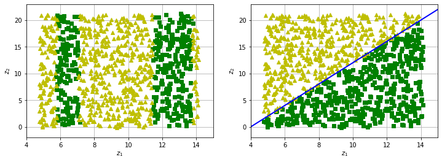
PCA¶
angle = np.pi / 5
stretch = 5
m = 200
np.random.seed(3)
X = np.random.randn(m, 2) / 10
X = X.dot(np.array([[stretch, 0], [0, 1]])) # stretch
X = X.dot([[np.cos(angle), np.sin(angle)], [-np.sin(angle),
np.cos(angle)]]) # rotate
u1 = np.array([np.cos(angle), np.sin(angle)])
u2 = np.array([np.cos(angle - 2 * np.pi / 6), np.sin(angle - 2 * np.pi / 6)])
u3 = np.array([np.cos(angle - np.pi / 2), np.sin(angle - np.pi / 2)])
X_proj1 = X.dot(u1.reshape(-1, 1))
X_proj2 = X.dot(u2.reshape(-1, 1))
X_proj3 = X.dot(u3.reshape(-1, 1))
plt.figure(figsize=(12, 6))
ax = plt.subplot2grid((3, 2), (0, 0), rowspan=3)
ax.plot([-1.4, 1.4], [-1.4 * u1[1] / u1[0], 1.4 * u1[1] / u1[0]], "k-", lw=1)
ax.plot([-1.4, 1.4], [-1.4 * u2[1] / u2[0], 1.4 * u2[1] / u2[0]], "k--", lw=1)
ax.plot([-1.4, 1.4], [-1.4 * u3[1] / u3[0], 1.4 * u3[1] / u3[0]], "k:", lw=2)
ax.plot(X[:, 0], X[:, 1], "bo", alpha=0.5)
ax.axis([-1.4, 1.4, -1.4, 1.4])
arrow_prop = {
'head_width': 0.1,
'lw': 5,
'length_includes_head': True,
'head_length': 0.1,
'fc': 'k',
'ec': 'k'
}
ax.arrow(0, 0, u1[0], u1[1], **arrow_prop)
ax.arrow(0, 0, u3[0], u3[1], **arrow_prop)
ax.text(u1[0] + 0.1, u1[1] - 0.05, r"$\mathbf{c_1}$", fontsize=22)
ax.text(u3[0] + 0.1, u3[1], r"$\mathbf{c_2}$", fontsize=22)
ax.set(xlabel="$x_1$", ylabel="$x_2$")
ax.grid(1)
ax = plt.subplot2grid((3, 2), (0, 1))
ax.plot([-2, 2], [0, 0], "k-", lw=1)
ax.plot(X_proj1[:, 0], np.zeros(m), "bo", alpha=0.3)
ax.axis([-2, 2, -1, 1])
ax.grid(1)
ax = plt.subplot2grid((3, 2), (1, 1))
ax.plot([-2, 2], [0, 0], "k--", lw=1)
ax.plot(X_proj2[:, 0], np.zeros(m), "bo", alpha=0.3)
ax.axis([-2, 2, -1, 1])
ax.grid(1)
ax = plt.subplot2grid((3, 2), (2, 1))
ax.plot([-2, 2], [0, 0], "k:", lw=2)
ax.plot(X_proj3[:, 0], np.zeros(m), "bo", alpha=0.3)
ax.axis([-2, 2, -1, 1])
ax.set(xlabel="$z_1$")
ax.grid(1)
plt.show()

图像压缩¶
mnist_784 = np.load('../../datasets/handson/mnist_784.npz', allow_pickle=True)
X, y = mnist_784['X'], mnist_784['y']
from sklearn.model_selection import train_test_split
X_train, X_test, y_train, y_test = train_test_split(X, y)
X_train.shape
(52500, 784)
pca = PCA()
pca.fit(X_train)
cumsum = np.cumsum(pca.explained_variance_ratio_)
d = np.argmax(cumsum >= 0.95) + 1
d
154
_, ax = plt.subplots(figsize=(6, 4))
ax.plot(cumsum, lw=3)
ax.hlines(y=0.95, xmin=0, xmax=d, color='k', ls='dotted')
ax.vlines(x=d, ymin=0, ymax=0.95, color='k', ls='dotted')
ax.plot(d, 0.95, "ko")
ax.annotate("Elbow",
xy=(65, 0.85),
xytext=(70, 0.7),
arrowprops=dict(arrowstyle="->"),
fontsize='large')
ax.set(xlabel="Dimensions", ylabel="Explained Variance")
ax.axis([0, 400, 0, 1])
ax.grid(1)
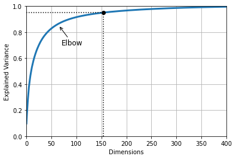
X_reduced = pca.fit_transform(X_train)
pca.n_components_
784
X_reduced = pca.fit_transform(X_train)
X_recovered = pca.inverse_transform(X_reduced)
import matplotlib as mpl
def plot_digit(ax, data):
image = data.reshape(28, 28)
ax.imshow(image, cmap=mpl.cm.binary, interpolation="nearest")
ax.axis("off")
fig = plt.figure(figsize=(8, 8))
outer_grid = fig.add_gridspec(2, 2, wspace=0.2, hspace=0.2)
out_grids = [(0, 0), (0, 1)]
titles = ["Original", "Compressed"]
for X_subset, (a, b), title in zip([X_train, X_recovered], out_grids, titles):
inner_grid = outer_grid[a, b].subgridspec(5, 5)
axes = inner_grid.subplots()
X_c = X_subset[::2100]
for ind, ax in enumerate(axes.flatten()):
plot_digit(ax, X_c[ind, :])
plt.show()
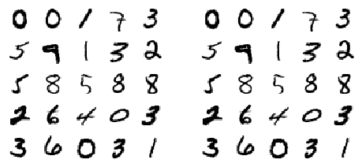
X_reduced_pca = X_reduced
增量 PCA¶
from sklearn.decomposition import IncrementalPCA
n_batches = 30
inc_pca = IncrementalPCA(n_components=154)
for X_batch in np.array_split(X_train, n_batches):
print(".", end="")
inc_pca.partial_fit(X_batch)
X_reduced = inc_pca.transform(X_train)
..............................
X_recovered_inc_pca = inc_pca.inverse_transform(X_reduced)
fig = plt.figure(figsize=(8, 8))
outer_grid = fig.add_gridspec(2, 2, wspace=0.2, hspace=0.2)
out_grids = [(0, 0), (0, 1)]
titles = ["Original", "Compressed"]
for X_subset, (a, b), title in zip([X_train, X_recovered_inc_pca], out_grids,
titles):
inner_grid = outer_grid[a, b].subgridspec(5, 5)
axes = inner_grid.subplots()
X_c = X_subset[::2100]
for ind, ax in enumerate(axes.flatten()):
plot_digit(ax, X_c[ind, :])
plt.show()
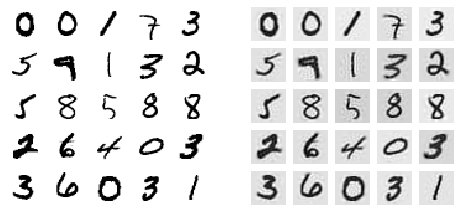
X_reduced_inc_pca = X_reduced
np.allclose(pca.mean_, inc_pca.mean_)
True
时间复杂度¶
import time
for n_components in (2, 10, 154):
print(f"n_components = {n_components}")
regular_pca = PCA(n_components=n_components, svd_solver="full")
inc_pca = IncrementalPCA(n_components=n_components, batch_size=200)
rnd_pca = PCA(n_components=n_components,
random_state=42,
svd_solver="randomized")
names = ["PCA", "Inc PCA", "Rnd PCA"]
pcas = [regular_pca, inc_pca, rnd_pca]
for name, pca in zip(names, pcas):
t1 = time.time()
pca.fit(X_train)
t2 = time.time()
print(f"{name}: {t2 - t1:.1f} seconds")
n_components = 2
PCA: 11.3 seconds
Inc PCA: 73.8 seconds
Rnd PCA: 1.1 seconds
n_components = 10
PCA: 10.2 seconds
Inc PCA: 81.3 seconds
Rnd PCA: 5.4 seconds
n_components = 154
PCA: 13.4 seconds
Inc PCA: 164.1 seconds
Rnd PCA: 5.9 seconds
times_rpca = []
times_pca = []
sizes = [
1000, 10000, 20000, 30000, 40000, 50000, 70000, 100000, 200000, 500000
]
_, ax = plt.subplots(figsize=(6, 4))
for n_samples in sizes:
X = np.random.randn(n_samples, 5)
pca = PCA(n_components=2, svd_solver="randomized", random_state=42)
t1 = time.time()
pca.fit(X)
t2 = time.time()
times_rpca.append(t2 - t1)
pca = PCA(n_components=2, svd_solver="full")
t1 = time.time()
pca.fit(X)
t2 = time.time()
times_pca.append(t2 - t1)
ax.plot(sizes, times_rpca, "b-o", label="RPCA")
ax.plot(sizes, times_pca, "r-s", label="PCA")
ax.set(xlabel="n_samples",
ylabel="Training time",
title="PCA and Randomized PCA time complexity ")
ax.legend()
<matplotlib.legend.Legend at 0x165bf6cb0>
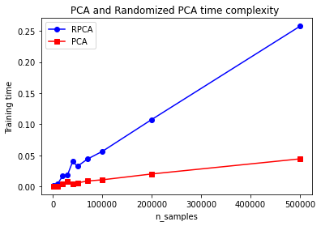
times_rpca = []
times_pca = []
sizes = [1000, 2000, 3000, 4000, 5000, 6000]
for n_features in sizes:
X = np.random.randn(2000, n_features)
pca = PCA(n_components=2, random_state=42, svd_solver="randomized")
t1 = time.time()
pca.fit(X)
t2 = time.time()
times_rpca.append(t2 - t1)
pca = PCA(n_components=2, svd_solver="full")
t1 = time.time()
pca.fit(X)
t2 = time.time()
times_pca.append(t2 - t1)
_, ax = plt.subplots(figsize=(6, 4))
ax.plot(sizes, times_rpca, "b-o", label="RPCA")
ax.plot(sizes, times_pca, "r-s", label="PCA")
ax.set(xlabel="n_features",
ylabel="Training time",
title="PCA and Randomized PCA time complexity")
ax.legend()
plt.show()
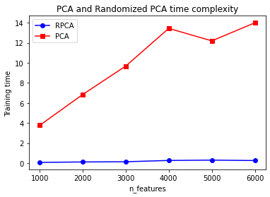
核 PCA¶
from sklearn.decomposition import KernelPCA
X, t = make_swiss_roll(n_samples=1000, noise=0.2, random_state=42)
lin_pca = KernelPCA(n_components=2,
kernel="linear",
fit_inverse_transform=True)
rbf_pca = KernelPCA(n_components=2,
kernel="rbf",
gamma=0.0433,
fit_inverse_transform=True)
sig_pca = KernelPCA(n_components=2,
kernel="sigmoid",
gamma=0.001,
coef0=1,
fit_inverse_transform=True)
y = t > 6.9
_, axes = plt.subplots(1, 3, figsize=(12, 4), constrained_layout=True)
titles = ["Linear", "RBF $γ=0.04$", "Sigmoid, $γ=10^{-3}, r=1$"]
pcas = [lin_pca, rbf_pca, sig_pca]
for title, pca, ax in zip(titles, pcas, axes.flatten()):
ax.annotate("Elbow",
xy=(65, 0.85),
xytext=(70, 0.7),
arrowprops=dict(arrowstyle="->"),
fontsize='large')
X_reduced = pca.fit_transform(X)
ax.set(xlabel="$z_1$", title=title)
ax.scatter(X_reduced[:, 0], X_reduced[:, 1], c=t, cmap=plt.cm.hot)
ax.grid(1)
axes[2].set(ylabel="$z_2$")
plt.show()
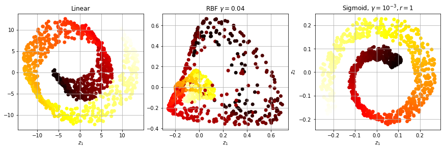
X_reduced_rbf = rbf_pca.fit_transform(X)
plt.figure(figsize=(12, 12))
X_inverse = rbf_pca.inverse_transform(X_reduced_rbf)
ax = plt.subplot(111, projection='3d')
ax.view_init(10, -70)
ax.scatter(X_inverse[:, 0],
X_inverse[:, 1],
X_inverse[:, 2],
c=t,
cmap=plt.cm.hot,
marker="x")
ax.set(xlabel="",
ylabel="",
zlabel="",
xticklabels=[],
yticklabels=[],
zticklabels=[]);
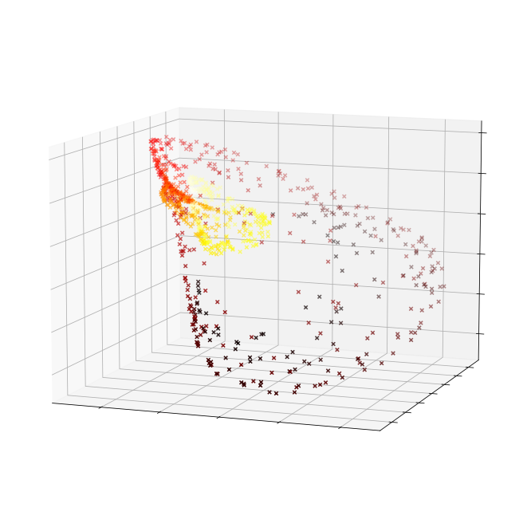
X_reduced = rbf_pca.fit_transform(X)
_, ax = plt.subplots(figsize=(6, 4))
ax.scatter(X_reduced[:, 0], X_reduced[:, 1], c=t, cmap=plt.cm.hot, marker="x")
ax.set(xlabel="$z_1$", ylabel="$z_2$")
ax.grid(1)
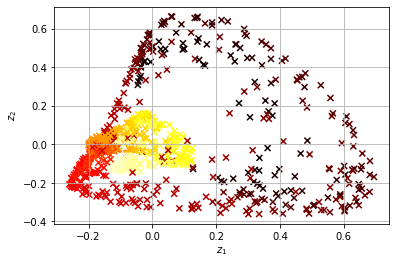
from sklearn.model_selection import GridSearchCV
from sklearn.linear_model import LogisticRegression
from sklearn.pipeline import Pipeline
clf = Pipeline([("kpca", KernelPCA(n_components=2)),
("log_reg", LogisticRegression(solver="lbfgs"))])
param_grid = [{
"kpca__gamma": np.linspace(0.03, 0.05, 10),
"kpca__kernel": ["rbf", "sigmoid"]
}]
grid_search = GridSearchCV(clf, param_grid, cv=3)
grid_search.fit(X, y)
GridSearchCV(cv=3,
estimator=Pipeline(steps=[('kpca', KernelPCA(n_components=2)),
('log_reg', LogisticRegression())]),
param_grid=[{'kpca__gamma': array([0.03 , 0.03222222, 0.03444444, 0.03666667, 0.03888889,
0.04111111, 0.04333333, 0.04555556, 0.04777778, 0.05 ]),
'kpca__kernel': ['rbf', 'sigmoid']}])In a Jupyter environment, please rerun this cell to show the HTML representation or trust the notebook. On GitHub, the HTML representation is unable to render, please try loading this page with nbviewer.org.
GridSearchCV(cv=3,
estimator=Pipeline(steps=[('kpca', KernelPCA(n_components=2)),
('log_reg', LogisticRegression())]),
param_grid=[{'kpca__gamma': array([0.03 , 0.03222222, 0.03444444, 0.03666667, 0.03888889,
0.04111111, 0.04333333, 0.04555556, 0.04777778, 0.05 ]),
'kpca__kernel': ['rbf', 'sigmoid']}])Pipeline(steps=[('kpca', KernelPCA(n_components=2)),
('log_reg', LogisticRegression())])KernelPCA(n_components=2)
LogisticRegression()
print(grid_search.best_params_)
{'kpca__gamma': 0.043333333333333335, 'kpca__kernel': 'rbf'}
rbf_pca = KernelPCA(n_components = 2, kernel="rbf", gamma=0.0433,
fit_inverse_transform=True)
X_reduced = rbf_pca.fit_transform(X)
X_preimage = rbf_pca.inverse_transform(X_reduced)
from sklearn.metrics import mean_squared_error
mean_squared_error(X, X_preimage)
32.78630879576611
习题¶
mnist_784 = np.load('../../datasets/handson/mnist_784.npz', allow_pickle=True)
X, y = mnist_784['X'], mnist_784['y']
y = y.ravel()
X_train, X_test, y_train, y_test = train_test_split(X,
y,
test_size=1 / 7,
random_state=42)
from sklearn.ensemble import RandomForestClassifier
rnd_clf = RandomForestClassifier(n_estimators=100, random_state=42)
import time
t0 = time.time()
rnd_clf.fit(X_train, y_train)
t1 = time.time()
print("Training took {:.2f}s".format(t1 - t0))
Training took 1169.23s
from sklearn.metrics import accuracy_score
y_pred = rnd_clf.predict(X_test)
accuracy_score(y_test, y_pred)
0.9674
降维¶
from sklearn.decomposition import PCA
pca = PCA(n_components=0.95)
X_train_reduced = pca.fit_transform(X_train)
rnd_clf2 = RandomForestClassifier(n_estimators=100, random_state=42)
t0 = time.time()
rnd_clf2.fit(X_train_reduced, y_train)
t1 = time.time()
print(f"Training took {t1 - t0:.2f}s")
Training took 55.81s
X_test_reduced = pca.transform(X_test)
y_pred = rnd_clf2.predict(X_test_reduced)
accuracy_score(y_test, y_pred)
0.9469
from sklearn.linear_model import LogisticRegression
log_clf = LogisticRegression(multi_class="multinomial",
solver="lbfgs",
max_iter=1000,
random_state=42)
t0 = time.time()
log_clf.fit(X_train, y_train)
t1 = time.time()
print(f"Training took {t1 - t0:.2f}s")
Training took 1020.92s
/opt/homebrew/Caskroom/mambaforge/base/envs/kaggle/lib/python3.10/site-packages/sklearn/linear_model/_logistic.py:444: ConvergenceWarning: lbfgs failed to converge (status=1):
STOP: TOTAL NO. of ITERATIONS REACHED LIMIT.
Increase the number of iterations (max_iter) or scale the data as shown in:
https://scikit-learn.org/stable/modules/preprocessing.html
Please also refer to the documentation for alternative solver options:
https://scikit-learn.org/stable/modules/linear_model.html#logistic-regression
n_iter_i = _check_optimize_result(
y_pred = log_clf.predict(X_test)
accuracy_score(y_test, y_pred)
0.9168
log_clf2 = LogisticRegression(multi_class="multinomial",
solver="lbfgs",
max_iter=1000,
random_state=42)
t0 = time.time()
log_clf2.fit(X_train_reduced, y_train)
t1 = time.time()
print(f"Training took {t1 - t0:.2f}s")
Training took 1890.57s
/opt/homebrew/Caskroom/mambaforge/base/envs/kaggle/lib/python3.10/site-packages/sklearn/linear_model/_logistic.py:444: ConvergenceWarning: lbfgs failed to converge (status=1):
STOP: TOTAL NO. of ITERATIONS REACHED LIMIT.
Increase the number of iterations (max_iter) or scale the data as shown in:
https://scikit-learn.org/stable/modules/preprocessing.html
Please also refer to the documentation for alternative solver options:
https://scikit-learn.org/stable/modules/linear_model.html#logistic-regression
n_iter_i = _check_optimize_result(
y_pred = log_clf2.predict(X_test_reduced)
accuracy_score(y_test, y_pred)
0.9164
UMAP¶
import umap
mnist_784 = np.load('../../datasets/handson/mnist_784.npz', allow_pickle=True)
X, y = mnist_784['X'], mnist_784['y']
y = y.ravel()
y = y.astype('int')
X.shape
(70000, 784)
X_train, X_test, y_train, y_test = train_test_split(X,
y,
test_size=1 / 7,
random_state=42)
X_train.shape
(60000, 784)
reducer = umap.UMAP(n_neighbors=100,
min_dist=0.5,
local_connectivity=2,
random_state=42)
embedding = reducer.fit_transform(X_train)
embedding.shape
(60000, 2)
y_train.shape
(60000,)
cmap = mpl.cm.get_cmap("jet")
_, ax = plt.subplots(figsize=(6, 6))
for digit in (2, 3, 5):
ax.scatter(embedding[y_train == digit, 0],
embedding[y_train == digit, 1])
ax.axis('off')
plt.show()
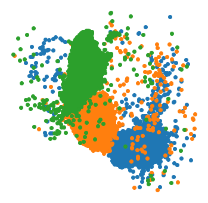
from sklearn.preprocessing import MinMaxScaler
from matplotlib.offsetbox import AnnotationBbox, OffsetImage
def plot_digits(ax, X, y, min_distance=0.05, images=None):
X_normalized = MinMaxScaler().fit_transform(X)
neighbors = np.array([[10., 10.]])
# The rest should be self-explanatory
cmap = mpl.cm.get_cmap("jet")
digits = np.unique(y)
for digit in digits:
ax.scatter(
X_normalized[y == digit, 0],
X_normalized[y == digit, 1],
)
ax.axis("off")
for ind, image_coord in enumerate(X_normalized):
closest_distance = np.linalg.norm(neighbors - image_coord,
axis=1).min()
if closest_distance > min_distance:
neighbors = np.r_[neighbors, [image_coord]]
if images is None:
ax.text(image_coord[0],
image_coord[1],
str(int(y[ind])),
fontdict={
"weight": "bold",
"size": 16
})
else:
image = images[ind].reshape(28, 28)
imagebox = AnnotationBbox(OffsetImage(image, cmap="binary"),
image_coord)
ax.add_artist(imagebox)
_, ax = plt.subplots(figsize=(8, 8))
plot_digits(ax, embedding, y_train)
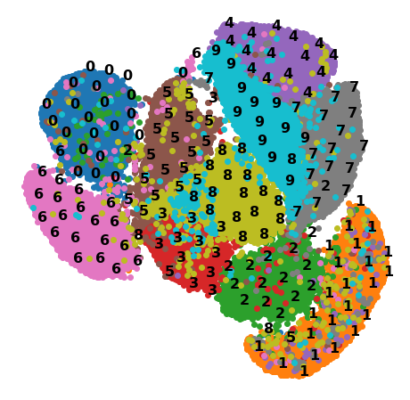
_, ax = plt.subplots(figsize=(8, 8))
plot_digits(ax, embedding, y_train, images=X_train)
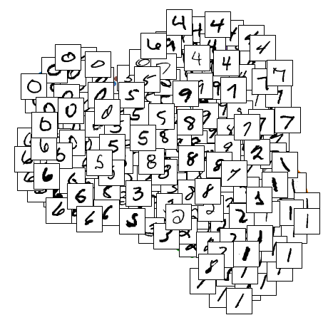
PCA¶
from sklearn.decomposition import PCA
import time
t0 = time.time()
X_pca_reduced = PCA(n_components=2, random_state=42).fit_transform(X)
t1 = time.time()
print(f"UMAP took {t1 - t0:.1f}s.")
UMAP took 2.7s.
_, ax = plt.subplots(figsize=(8, 8))
plot_digits(ax, X_pca_reduced, y)
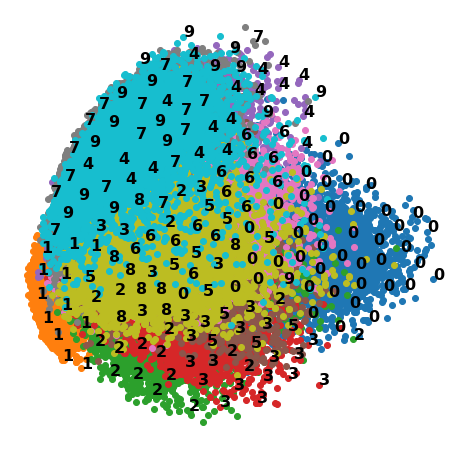
pca_umap = Pipeline([("pca", PCA(n_components=0.95, random_state=42)),
("umap", umap.UMAP(random_state=42))])
t0 = time.time()
X_pca_umap_reduced = pca_umap.fit_transform(X)
t1 = time.time()
print(f"PCA+UMAP took {t1 - t0:.1f}s.")
PCA+UMAP took 70.1s.
_, ax = plt.subplots(figsize=(8, 8))
plot_digits(ax, X_pca_umap_reduced, y)
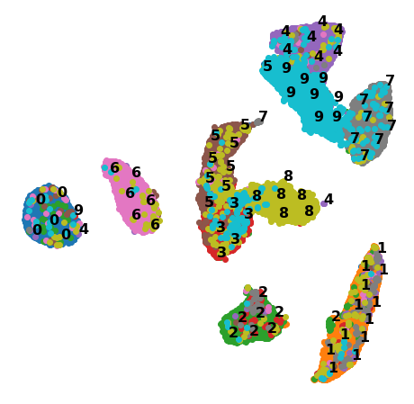